虞山古城楼与山前街行摄记
2026.08.26 · 摄影笔记 · 阜成门-虞山城墙-山前街·常熟 · CONTAX-RTS · Planar-50-1.4 · LUCKY-SHD-400
山前街并不长，却有着两种截然不同的面貌。一边是仍有人居住的老街巷弄，一边是修缮后的建筑、茶室、咖啡馆和文创店铺。这个夏日傍晚，我带着 Contax RTS 和一卷黑白胶片，从阜成门出发，沿着虞山脚下慢慢走了一圈。
那天午后，我想沿着虞山脚下走走，随手拍些照片，于是开车来到了阜成门。
当时已接近傍晚，城楼已经停止入内，我便在路边拍了几张。随后沿虞山南路往前走，很快就到了山前街。
从入口走进山前街，先是一段仍有人居住的小巷，保留着很自然的老街生活。再往前走，气氛却渐渐变了：修缮后的老建筑、墙上的大字、咖啡馆、茶室、小吃店和文创店铺逐渐出现。也许因为天气炎热，路上的行人并不多。
这种变化也是山前街给我印象最深的地方。一边是经过设计的商业空间，一边仍是居民日常生活的街巷，两种面貌交错在一条并不很长的街上。慢慢走上一圈，倒也很有意思。
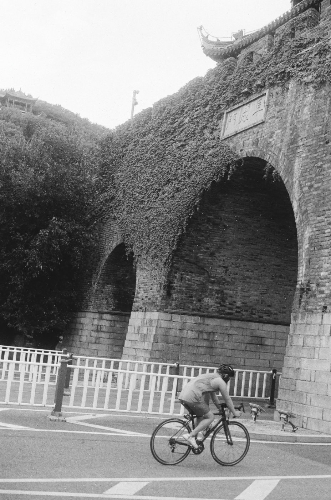
阜成门城楼下正好有人骑行经过，我迅速按下快门。
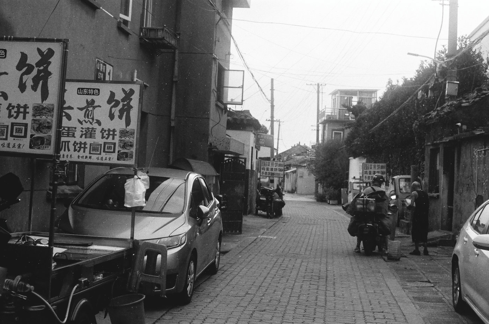
小巷仍有人居住。
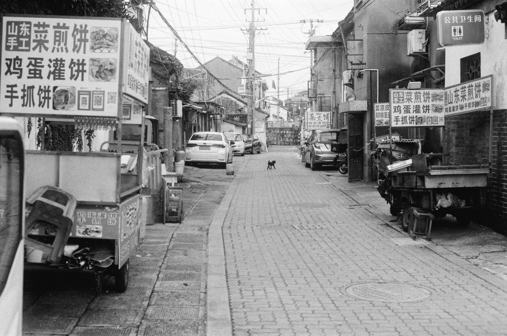
做小生意的宣传牌向前排开，一只小黑狗正穿过小巷。
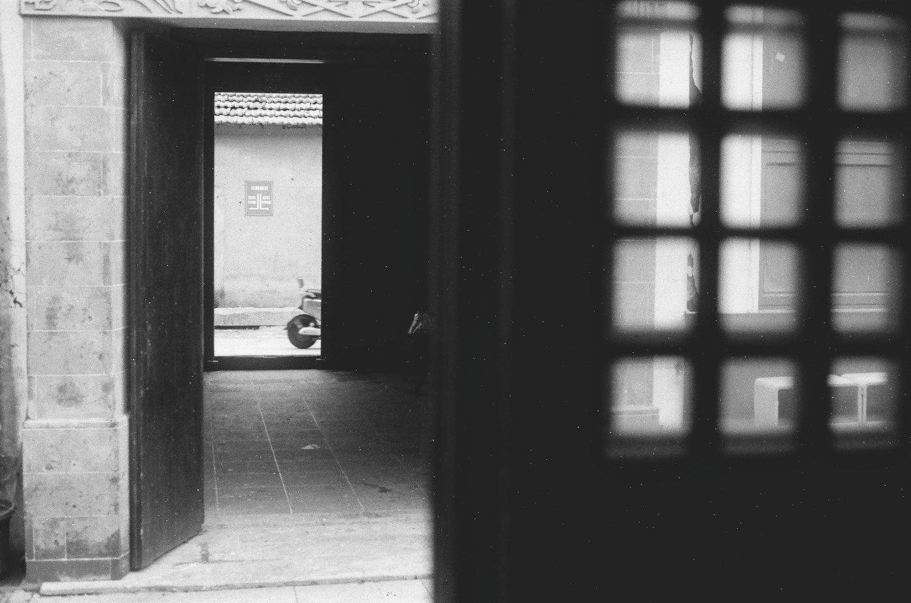
修缮后的旧建筑里，三道门框一直延伸到街上，远处正好有一辆电动车经过。
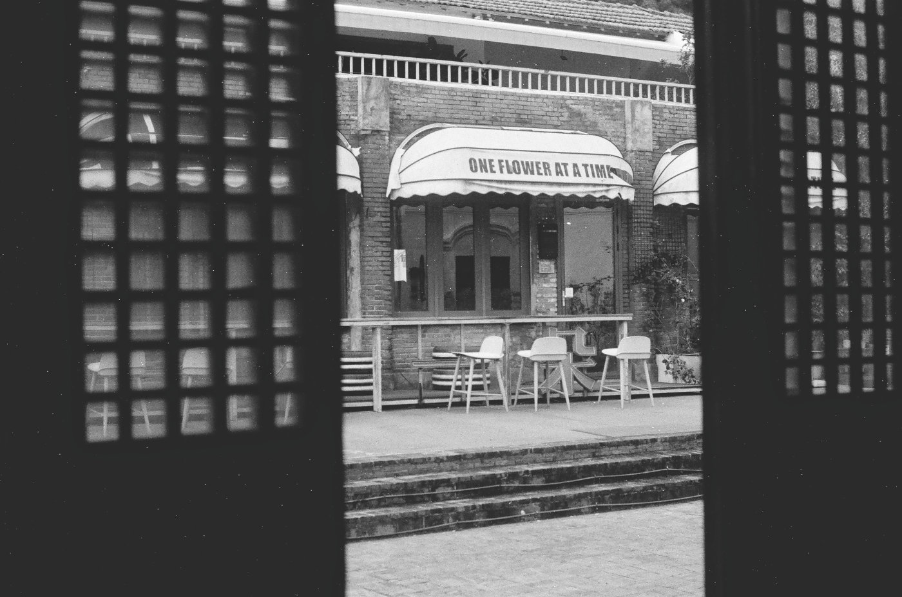
透过旧窗格望出去，对面是一间现代风格的咖啡馆。
 走出古建筑，墙上的“虞山”二字与对面的老建筑正好形成呼应。
走出古建筑，墙上的“虞山”二字与对面的老建筑正好形成呼应。
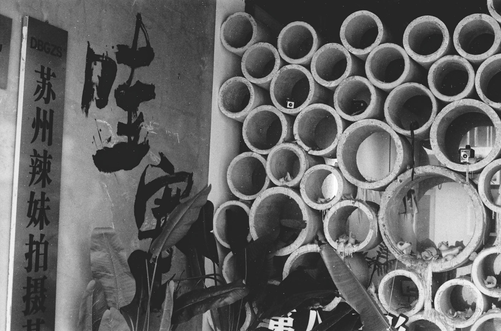
沿路的个性化店铺，大小不一的圆形结构与“辣妹拍摄”的字挺有意思。
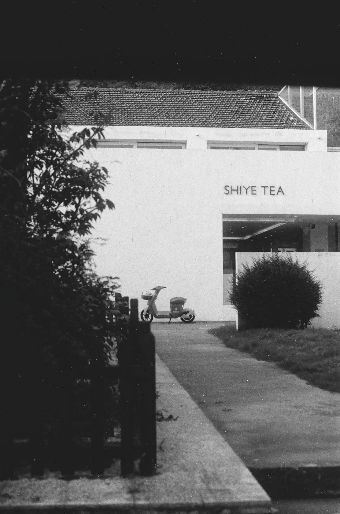
山前街一间店铺的入口。
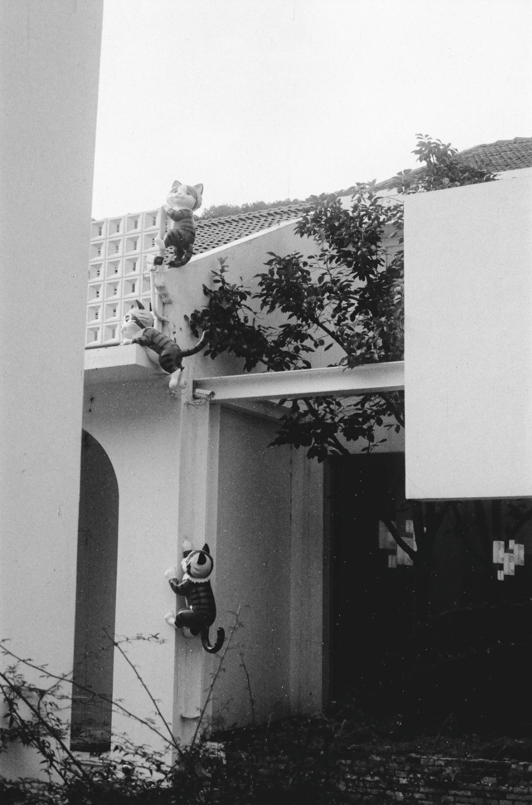
走到这家店铺时，发现三只小猫向上攀爬的创意挺有意思。
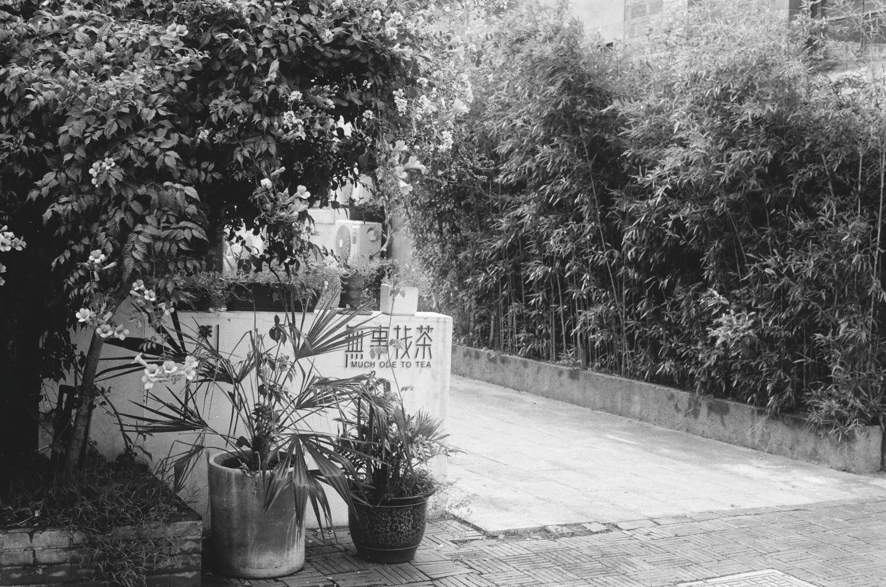
一间茶室入口处，植物的排列与层次很有美感。
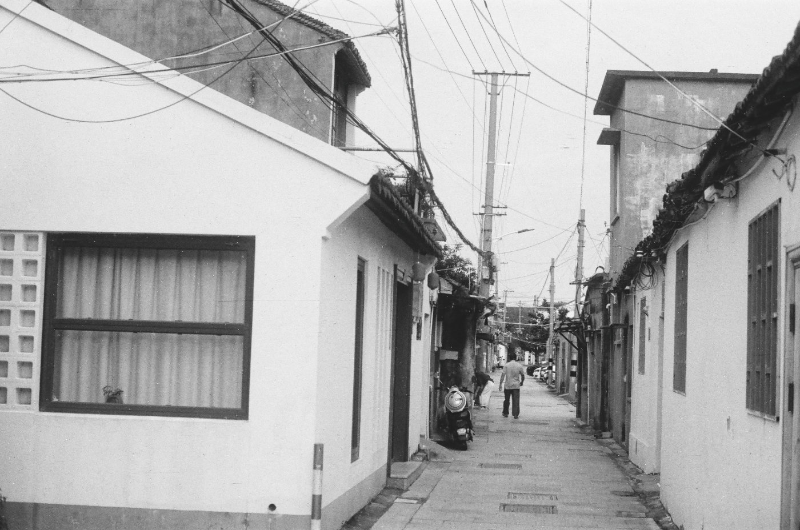
文创店铺走完后又折回小巷，这里仍是继续的日常。
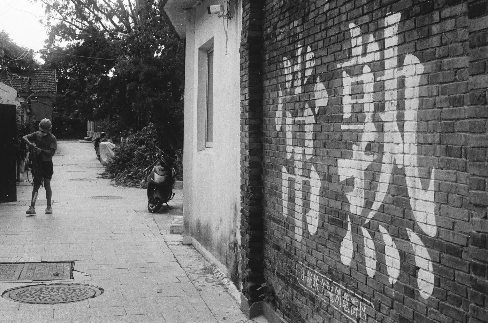
“常熟”两个大字吸引了我，不远处是电动车与干活的工人。
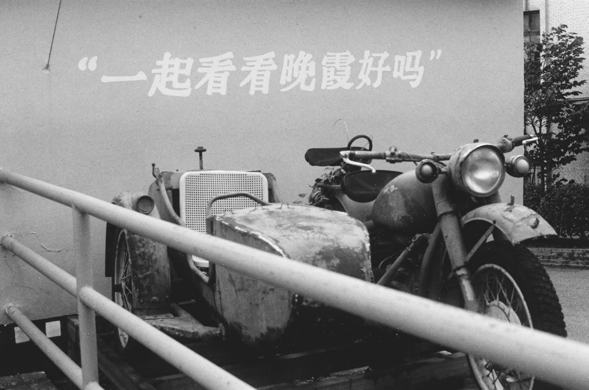
我往外面大路上走，在路口处看到这句标语与一辆破旧的边三轮。
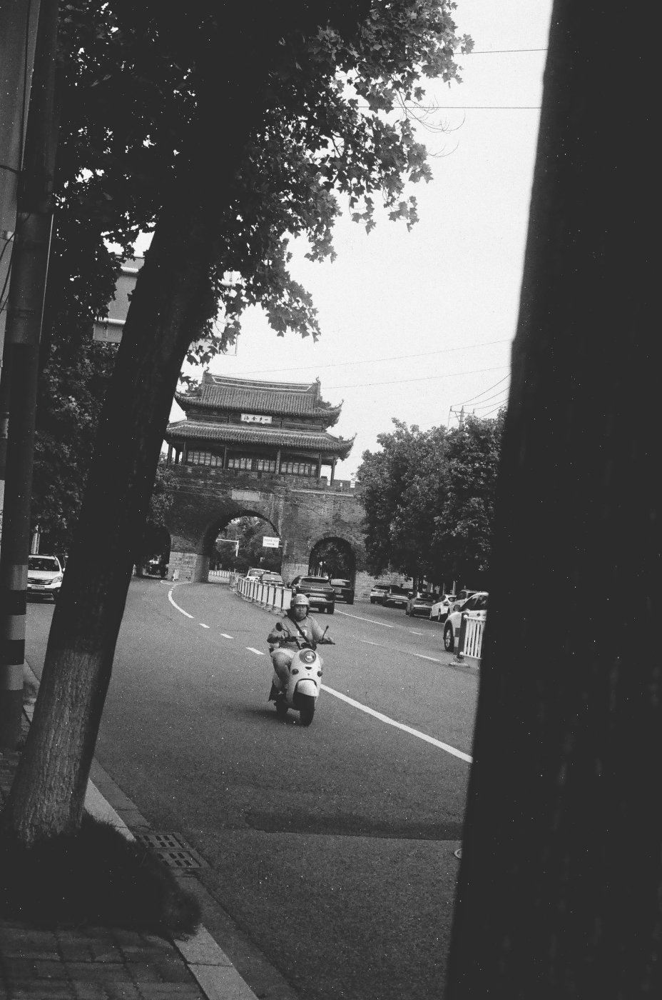
最后我又回到了阜成门城楼，隔着树影望向远处。
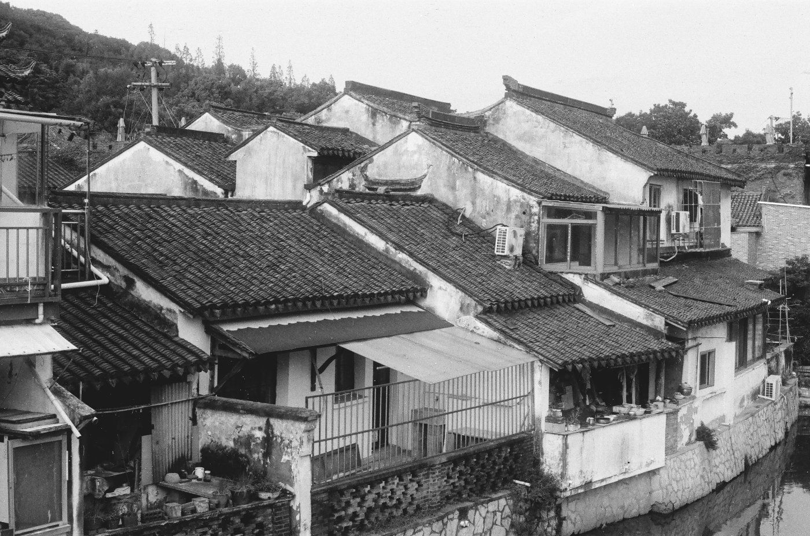
在城楼边的河岸，我无意中发现这里还有一片仍有人居住的旧屋。
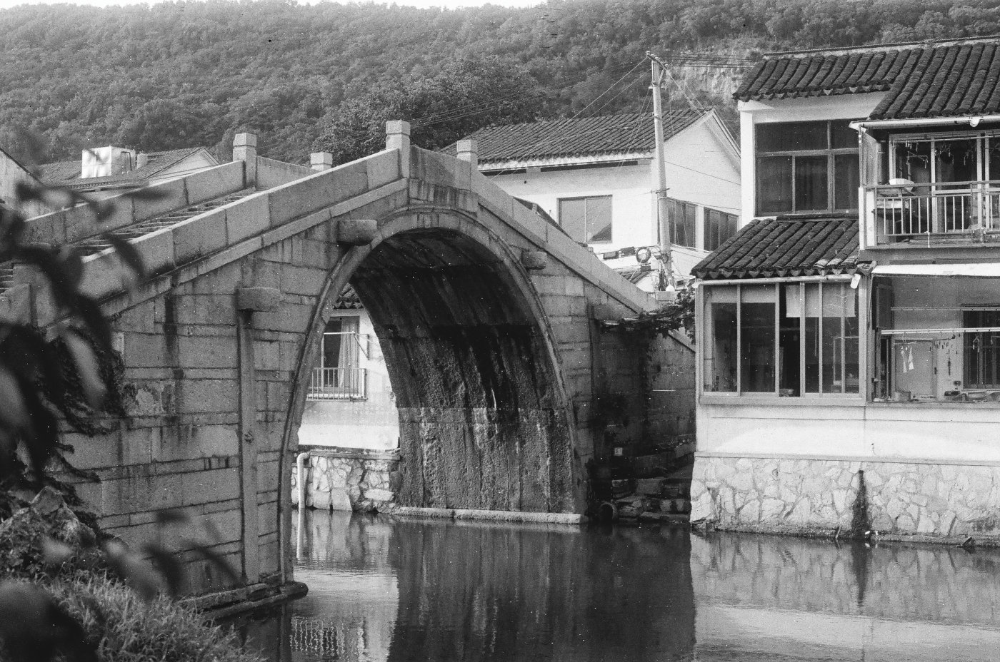
连接河道两岸的甸桥。